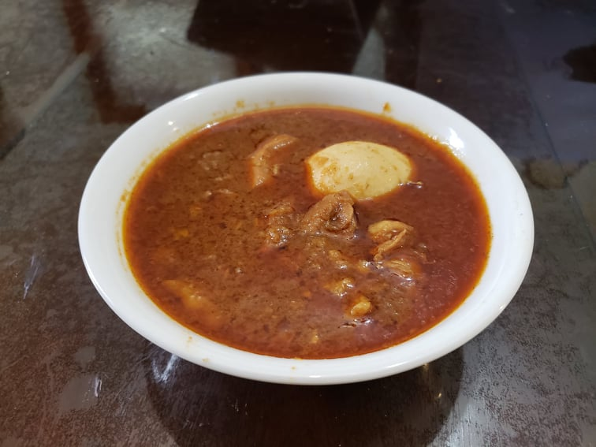

Doro Wat

Ingredients:
- 3 lb Chicken thighs, skinless and boneless, cut into 1 inch cubes
- 2 tbsp Lemon juice
- 2 tbsp Nit’ir Qibe
- 2 tbsp Olive oil
- 3 cups Onion, pureed, about 3 onions
- 3 tbsp Unsalted butter
- 1 tbsp Ginger, minced
- 1 tbsp Garlic, minced
- 1/4 cup Berbere
- 1 1/2 tsp Salt
- 1/2 cup Tej, or substitute White wine + 1 tsp Honey
- 1 cup Chicken stock
- 4 Hard-boiled eggs
Instructions:
- Place the chicken into a bowl with the lemon juice. Massage the lemon juice into the chicken and let rest for at least 30 minutes.
- Heat the nit’ir qibe and olive oil in a large pot over low heat. Add in the onions and let cook for 45 minutes, covered, stirring occasionally.
- Add in the ginger, garlic, and 1 tablespoon of butter. Re-cover and let cook for 20 minutes, stirring occasionally.
- Mix in the berbere and 2 tablespoons of butter. Let cook for 30 more minutes, covered, and stirring occasionally.
- Add the chicken, broth, salt and wine and bring to a boil. Reduce the heat to low, cover, and simmer for 45 minutes, stirring occasionally.
- Taste and adjust for seasonings, adding more berbere if desired. Poke holes all over into the eggs with a fork or a toothpick. Add in the eggs, cover, and let simmer for 15 minutes.
- Optionally, remove the eggs and slice them before placing them back into the pot. Serve with injera, flatbread, or rice.